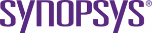
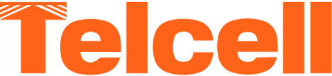
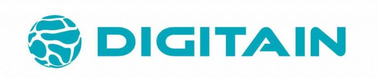
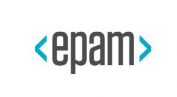
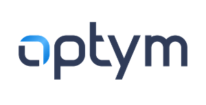
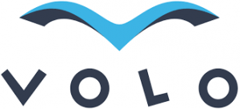
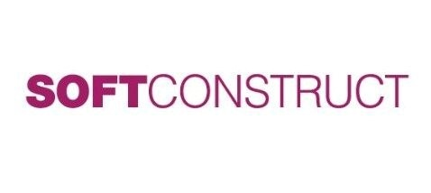

| Լօգօ |
Անվանում |
Կայք |
Հիմնադրման ամսաթիվ |
Հարկատու համար |
Ինֆորմացիա |
|  |
ՍԻՆՈՓՍԻՍ ԱՐՄԵՆԻԱ |
Link |
1986թ |
57-րդ |
2-րդ խոշոր հարկատու ՏՏ ընկերությունը «ՍԻՆՈՓՍԻՍ ԱՐՄԵՆԻԱ»-ն է։ Ընկերությունը զբաղվում է չիպերի արտադրությամբ և ծրագրային սպասարկմամբ։ Տրամադրում է նաև R&D (Research and Development) ծառայություն և աջակցում է էլեկտրոնային դիզայնի ավտոմատացմանը։ Հայաստանում գործում է երկու գրասենյակ ՝ մեկը Երևանում, իսկ մյուսը՝ Գյումրիում։ «ՍԻՆՈՓՍԻՍ ԱՐՄԵՆԻԱ»-ն «ՍԻՆՈՓՍԻՍ» ցանցի՝ ԱՄՆ սահմաններից դուրս գտնվող խոշոր մասնաճյուղերից է։ 57-րդ տեղում է գտնվում որպես խոշոր հարկատու՝ 2,844,694 հազար դրամ հարկային ցուցանիշով։ Ընկերությունը իր աշխատակիցներին տրամադրում է առողջության ապահովագրության հնարավորություն։
|
|  |
ԹԵԼՍԵԼ |
Link |
2007թ |
67-րդ |
Բոլորին հայտնի «ԹԵԼ ՍԵԼ» ընկերությունը զբաղվում է տերմինալների սպասարկմամբ և առանձնանում է իր նորարարական լուծումներով։ Այդ տերմինալները ընդունում են տարատեսակ վճարումներ։ Այդ գործընթացը, ինչպես վստահեցնում է «ԹԵԼ ՍԵԼ»-ը, պարզ է, հուսալի և անվտանգ։ Ընկերությունը վերջերս նաև հանդես է գալիս Telcell transfer, My Telcell ծրագրերի առաջարկությամբ։ Այն 67-րդ խոշոր հարկատուն է իր 2,610,657 հազար դրամ հարկ ցուցանիշով։
|
|  |
ԴԻՋԻԹԵՅՆ |
Link |
1999թ |
68-րդ |
«ԴԻՋԻԹԵՅՆ»-ը ՏՏ ոլորտի առաջատար ընկերություններից է։ Ընկերությունը մասնագիտացած է ծրագրային լուծումների ապահովմամբ և’ առցանց և’ բջջային հարթակներում։ Ընկերությունը հիմադրվել է 1999 թվականին։ Գլոբալ տեսանկյունից համագործակցում է 170-ից ավելի ընկերությունների հետ։ «ԴԻՋԻԹԵՅՆ»-ը առաջարկում է iGaming, Esports, Table Football, Fast Games և այլ տարատեսակ պրոդուկտներ, որոնցից ամենահայտնին TotoGaming-ն է։ Ընկերության աշխատակիցներին ընձեռված է առողջության ապահովագրություն։ 68-րդ հորզոնականն է զբաղեցնում՝ որպես խոշոր հարկատու՝ անցած հարկային տարվա ընթացքում վճարելով 2,442,457 հազար դրամ հարկ։
|
|
ՊԻԿՍԱՐՏ |
Link |
2011թ |
129-րդ |
Բոլորիս հայտնի «ՊԻԿՍԱՐՏ» ընկերությունը տալիս է հնարավորություն՝ մշակելու նկարներ և տեսանյութեր իր հայտնի հավելվածի միջոցով։ Վերջինս ունի շուրջ 130 միլիոն օգտատեր ամբողջ աշխարհում և համարվում է լուսանկարների և տեսանյութերի խմբագրման 4-րդ ծրագիրը Instagram, Snapchat և YouTube ծրագրերից հետո։ Լինելով ՏՏ ոլորտի ընկերություն՝ «ՊԻԿՍԱՐՏ»-ը հոգում է նաև իր թիմի առողջության ապահովագրությունը։ Զբաղեցնում է 129-րդ հորիզոնականը՝ որպես հարկատու՝ վճարելով 1,448,562 հազար դրամ հարկ։
|
|  |
ԷՊԱՄ ՍԻՍԹԵՄԶ |
Link |
1993թ․ |
238-րդ |
1993 թվականից ընկերությունը իր ծրագրային ապահովման ինժեներական փորձի հիման վրա առաջատար է դարձել ինժեներական և թվային արտադրանքի նախագծման ոլորտում։ Ընկերության արտասահմանյան թիմը ծառայություններ է մատուցում շուրջ 25 երկրներում։ 2013 թվականից Ֆորբսը ամեն տարի հրապարակում է ցուցակ, որում զետեղվում են աշխարհի 25 արագ զարգացող ընկերությունները։ «ԷՊԱՄ»-ը չորս ՏՏ ընկերություններից մեկն է, որ հայտնվել է այդտեղ։ Ընկերությունը առողջության ապահովագրություն է տրամադրում է ոչ միայն աշխատակիցներին, այլև ընտանիքի անդամներին։ 2020 թվականին ընկերությունը վճարել է 742,896 հազար դրամ հարկ և այդ ցուցանիշով հարկատու ընկերությունների ցուցակում 238-րդն է։ |
|
ՌԵՆԴԵՐՖՈՐԵՍԹ |
Link |
2013թ. |
395-րդ |
«ՌԵՆԴԵՐՖՈՐԵՍԹ» ընկերությունը զբաղվում է բրենդինգով, որը հասանելի և մատչելի է բոլորի համար։ Հաճախորդներին տրամադրում է մարկետինգային գործիքներ՝ հեռարձակման որակի տեսանյութեր և անիմացիաներ, եզակի լոգոներ պրոֆեսիոնալ կայքեր ստեղծելու համար։ «ՌԵՆԴԵՐՖՈՐԵՍԹ»-ի առաջարկած լուծումների օգտակար և արդյունավետ լինելու մասին խոսում են ցուցանիշները։ Նրանք ի կատար են ածել 30 միլիոն ծրագիր և ունեն 10 միլիոն օգտատեր։ Ընկերությունը 395-րդն է 1000 հարկատուների ցանկում և նախորդ հարկային տարում վճարել է 443,851 հազար դրամ հարկ։ «ՌԵՆԴԵՐՖՈՐԵՍԹ»-ը իր աշխատակիցներին տրամադրում է մի շարք հնարավորություններ, որոնցից մեկը առողջության ապահովագրությունն է։
|
|  |
ՕՊՏԻՄ ԱՐՄԵՆԻԱ |
Link |
2000թ. |
441-րդ |
Այս ընկերությունն օգնում է կազմակերպություններին տիրապետել ծախսերը նվազեցնելու և եկամուտները առավելագույնի հասցնելու հմտություւններին։ Նրանք քաջալերում են ավտոմատացումը և օպտիմիզացիան։ Ընկերությունը հիմնադրվել է 2007 թվականին և ներկայումս «Օպտիմը» ցանցի մեծությամբ երկրորդ ընկերությունն է։ Կան գրասենյակներ նաև ԱՄՆ-ում, Ավստրալիայում, Հնդկաստանում և Չիլիում։ «ՕՊՏԻՄ ԱՐՄԵՆԻԱ» ընկերությունը իր աշխատակիցներին տրամադրում է առողջության ապահովագրության հնարավորություն։ Այն 441-րդն է հարկատուների ցանկում իր 390,659 հազար դրամ հարկային ցուցանիշով։
|
|  |
ՎՕԼՕ |
Link |
2006թ. |
468-րդ |
Այս հորիզոնականը զբաղեցնում է «ՎՕԼՕ» ընկերությունը, որն առաքելություն ունի ծառայություններ մատուցել սկսնակ գործարարներին, որոնք պատրաստ են մարտահրավեր նետել շուկային։ «ՎՕԼՕ»-ն հիմնադրվել է 2006 թվականին։ Գլխամասային գրասենյակը գտնվում է Երևանում, իսկ յոթ զարգացման գրասենյակները գործում են Հայաստանում և Ուկրանիայում։ Ընկերությունը կյանքի է կոչել 160-ից ավելի ծրագրեր, որոնք կատարվել են առանց ձախողման։ Ընկերությունը 2020 թվականին զբաղեցրել է 468-րդ տեղը խոշոր հարկատուների ցուցակում և ապահովել է 361,598 հազար դրամի հարկային մուտք պետական բյուջե։
|
 |
EPYGI LABS AM/ԹՈՒՄՈ |
Link |
2011թ. |
478-րդ |
«EPYGI LABS AM»-ը հասարկությանը առավել հայտնի է «ԹՈՒՄՈ» անվանմամբ։ Այն համագործակցում է «Սեմ և Սիլվիա Սիմոնյան» հիմնադրամի հետ։ «Թումո» ստեղծարար տեխնորլոգիաների կենտրոնը անվճար կրթական կենտրոն է, որը հանդես է գալիս 4 կենտրոններով Երևանում, Գյումրիում, Դիլիջանում և Ստեփանակերտում։ Գործում են նաև միջազգային կենտրոններ ՀՀ-ի սահմաններից դուրս՝ Փարիզում, Մոսկվայում, Տիրանայում, Բեյրութում և Բեռլինում։ Գործում են նաև «Թումո տուփ» մարզային ծրագրեր, որոնք վայելում են պատանի սերնդի հետաքրքությունը։ Հարկատու կազմակերպությունը «EPYGI LABS AM» ՍՊԸ-ն է, որը՝ որպես հարկատու ընկերություն առաջին 1000 հարկատուների ցանկում զբաղեցնում է 478-րդ տեղը՝ վճարելով 357,158 հազար դրամ հարկ։
|
|  |
ՍՈՖԹ ԿՈՆՍՏՐԱԿՏ |
Link |
2010թ |
50-րդ |
ՀՀ-ում գործունեություն ծավալող ՏՏ ընկերություններից ամենաշատ հարկ վճարող ընկերությունը «ՍՈՖԹ ԿՈՆՍՏՐԱԿՏ»-ն է։ Հիմնադրվել է Երևանում 2010 թվականին։ Այն ունի 15-ից ավելի մասնաճյուղեր ամբողջ աշխարհում և համարվում է հայկական առաջատար ՏՏ ընկերություններց մեկը։ «ՍՈՖԹ ԿՈՆՍՏՐԱԿՏ»-ը առանձնանում է իր Panda MRbeta, Hoory, ucraft, BetConstruct, fasttoken և այլ առաջատար պրոդուկտներով, որոնք «ՍՈՖԹ ԿՈՆՍՏՐԱԿՏ»-ի մեծ ընտանիքի մի մասն են կազմում։ VivaroBet դրամախաղ ծրագիրը նույնպես ապահովվում է սույն ընկերության կողմից։ Լինելով ՏՏ ոլորտի խոշոր հարկատուն՝ վճարել է 3,361,696 հազար դրամ հարկ և այդ ցուցանիշով 50-րդն է։
|